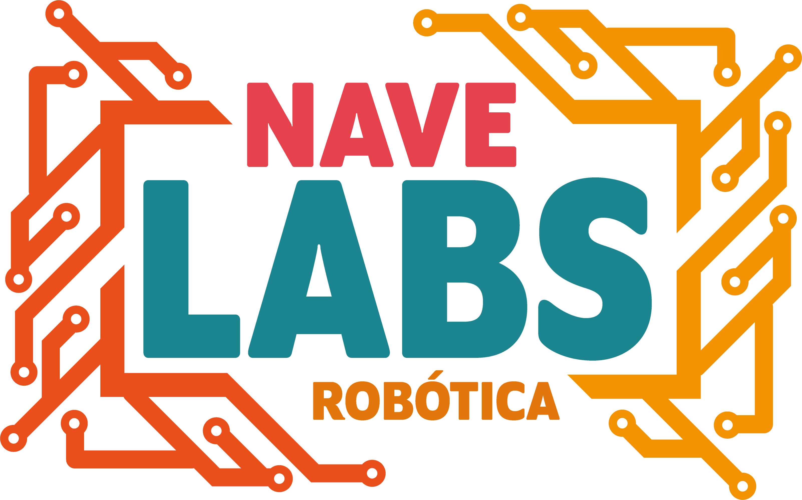

Tecnologias na Educação
NAVE Labs
Aqui você vai encontrar informações sobre o grupo de robótica do NAVE Rio;
hello
Sobre
O NAVE Labs se propõe a ser um núcleo de pesquisa e inovação, com base na criação de um ambiente de aprendizado colaborativo. Faz parte do programa de Educação NAVE do Instituto Oi Futuro, que acontece no Colégio Estadual José Leite Lopes, onde ocorrem implementações de práticas e desenvolvimento de novas ferramentas com o objetivo principal de fomentar no corpo discente autonomia, empreendedorismo, proatividade e interesse pela pesquisa. A fim de atingir seu objetivo principal, o projeto procura se articular com outros grupos de pesquisa dentro e fora do programa NAVE.
Projetos
Algumas de nossas atividades que realizamos em eventos
Projetos
StopIt - Um game em arduino
StopIt! é a reformulação, feita para a plataforma Arduino, de um dos games mais famosos da década de 80.
Sabemos que os games atraem todo tipo de público, principalmente os jovens, bem como a utilização da robótica. Alinhando estes temas, podemos envolver uma forma interessante e engajadora, minimizando assim o desinteresse no aprendizado e participação em sala de aula, além de tornar o aprendizado uma prática mais criativa, como promove a cultura “maker”.Pisca-pisca
Teclado Musical
Genius
Genius é um projeto que tem como proposta aumentar o potencial de concentração de um indivíduo, através de sequências de cores que aumentam em progressão.
Timelapse
É um projeto desenvolvido utilizando conceitos de captação de vídeo, onde o objetivo é reproduzir o modelo de filmagem denominado Timelapse, que constitui-se de gravar uma cena fazendo uma movimentação de 180º da câmera.
Math Blaster - Um edularp com Arduino
Um party game narrativo para crianças, que utiliza conceitos pedagógicos do STEAM e Arduino como artefato lúdico.
Um cientista malvado decidiu se vingar de seu antigo empregador, ameaçando-o com uma bomba! Você é o único que pode detê-lo utilizando o poder da matemática!Curso de Arduino
É um curso online, disponibilizado no canal do NAVE Labs no Youtube, de robótica básico que visa passar ao aluno conhecimentos sobre não só os componentes do kit Arduino mas também ensinar como fazer o game StopIt programado do zero.
Cube
Um cubo feito com leds coloridos, animado e programado que possui como funcionalidade ser uma luminária e consumir menos do que as luminárias comuns, vide que o tamanho, e os leds consomem menos do que lâmpadas fluorescentes ou incandescentes.
Equipe
Nossa equipe é formada por alunos e professores do NAVE.
NAVE Labs

Antoanne Pontes
Pesquisador e coordenador do curso de programação NAVE Rio
Professor, Pesquisador e Analista de Sistemas, pós-graduado pela PUC-Rio, mestrando em Sistemas de Informação pela UFRJ. É Coordenador Pedagógico do curso de Programação para Games no projeto NAVE, através do parceiro CESAR. Líder do grupo de pesquisas NAVE Labs, pratica iniciativas na escola como as Oficinas de Robótica e apoia a parceria com o programa Microsoft Educator Network. É também um dos organizadores das Batalhas de Games e do evento anual Rio Indie Games em parceria com a ONG Cinema Nosso.
José Augusto
Pesquisador e professor de programação do NAVE Rio
Graduação em Jogos Digitais pela Universidade Estácio de Sá (2008). Experiência de trabalho: Empresa Zênite Games como analista programador para trabalhar com Advergames. (2006 - 2007); Empresa Magus Ludens como analista programador para trabalhar com jogos casuais para desktop. (2008 - 2009); Empresa PlayerUm como analista programador para trabalhar com jogos casuais, conteúdo e aplicativos digitais. (2009 - 2010). Empresa Technology and Training como analista programador para trabalhar com jogos educativos e empresariais. (2010 - 2012); Empresa Ratto Software como analista programador para trabalhar com jogos casuais, sociais e web. (2012 - 2013); Empresa C.E.S.A.R como consultor de qualificação para ministrar aulas sobre programação para jogos. (2013 - atual). Experiência com desenvolvimento de aplicações desktop, web e mobile (cliente e servidor). Experiência com diversas linguagens de programação, bibliotecas, frameworks e engines para desenvolvimento de jogos digitais.
Daniel de Sant'anna Martins
Ludólogo e designer educacional
Começou como designer gráfico, se pós-graduando em Design Estratégico pela ESPM. Atuou como designer freelancer e em agências por mais de dez anos, gerenciando equipes e projetos de clientes nacionais e internacionais. Game designer autodidata, atua há cinco anos no mercado de jogos e na área de ensino, em empresas, startups e auxiliando na criação de cursos de desenvolvimento de jogos do RJ e outros estados, como Senai, Escola SESC de Ensino Médio, Unigranrio, entre outros. Atualmente leciona no NAVE-RJ, SENAC-RJ e gerencia as próprias empresas: a D+1 Design e Jogos, prestando consultoria e produzindo experiências lúdicas para fins educacionais; e a DMand Game Studio, onde desenvolve jogos analógicos para entretenimento.
Lucas Soares
Programador e maker
Estudante de Programação no NAVE, membro do grupo de pesquisa e disseminação de robótica – NAVE Labs, amante de programação e robótica, atuante no desenvolvimento de projetos com Arduino, softwares, jogos 2D, 3D e aplicativos, amante da área de ethical hacking e segurança digital. Atualemente organiza eventos sobre tecnologia no Rio de Janeiro, em parceria com comunidades de desenvolvimento.
Luca Alves
Estudante de Programação, NAVE, membro do grupo de pesquisa e disseminação de robótica – NAVE LABS, entusiasta de robótica e amante de Game Design, atuante no desenvolvimento de jogos 2D, 3D e analógicos, sendo iniciante na atuação de Scrum Master, em uma frase: "Jogos tem a capacidade de mudar o mundo!"
Patrick Scoralick
Estudante de Programação, NAVE, membro do grupo de pesquisa e disseminação de robótica – NAVE LABS, amante de robótica, entusiasta por jogos, em uma frase: "Uma mente que se expande a uma nova ideia, jamais retorna ao seu tamanho original
Ludmilla Marroig
Giovanna Valentina
Meu nome é Giovanna Valentina Rocha, tenho 17 anos e estudo no NAVE Rio, cursando Roteiro. Fui me apaixonando ao longo do tempo pela robótica e a cultura Maker através de amigos. Juntos, no NAVE Labs, temos o objetivo de mostrar que pode haver integração entre educação e robótica, e com ela, auxiliar no desenvolvimento e melhora da aprendizagem. Ao sair no NAVE pretendo fazer faculdade de Nutrição, com intenção de arrumar novas maneiras de introduzir a robótica na minha futura profissão.
Victoria Mendes
Maria Clara
Contato
Gostou do nosso trabalho?
Entre em contato
Contato
- NAVE Rio - Rio de Janeiro RJ
- gruponavelabs@gmail.com
- navelabs.github.io